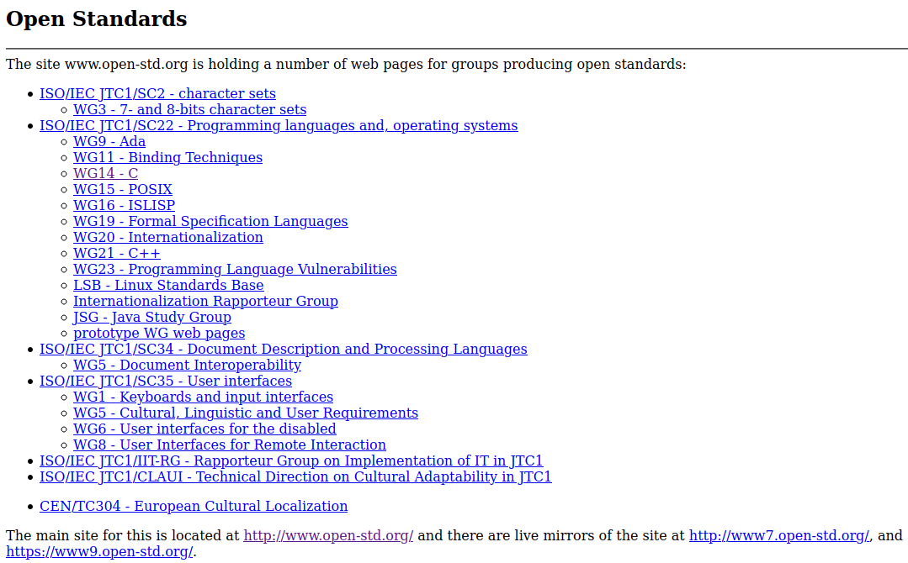
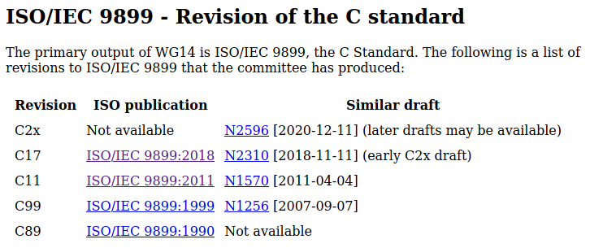

По странному стечению обстоятельств найти в Интернете стандарт на язык Си не так то просто. Похоже, что комитет ISO распространяет варианты этого стандарта за деньги, и сознательно скрывает информацию, где таковой стандарт можно получить в открытом виде.
Если попытаться найти стандарт в Интернете через поисковик, введя в строку поиска "Стандарт языка Си", или более точную фразу "Стандарт языка C99" и всякие другие комбинации, то ничего найдено не будет. Складывается впечатление, что нигде этих стандартов в открытом доступе нет, и доступны они только избранным.
Однако есть сайт open-std.org, на котором все-таки выкладываются версии стандартов языков программирования, в том числе для Си и Си++. Однако, поиска по сайту нет, а главная страница выглядит как привет из девяностых:

Если пытаться искать на нем файл со стандартом по логике вещей, то ничего не получится. Чтобы найти хоть какие-то данные надо понимать все хитросплетения бюрократического аппарата комитета по стандартизации языка. Кроме того, надо знать номера документов. То есть, на первый взгляд, вполне конкретных стандартов Си99 или Си++11 на этом сайте не найти.
Поисковик Google на третьей-четвертой странице выдачи таки может дать ссылку на один из вариантов стандарта языка Си, который можно найти в следующем файле:
http://www.open-std.org/jtc1/sc22/wg14/www/docs/n1124.pdf
Судя по содержимому, этот стандарт выпущен для следующей версии языка Си:
WG14/N1124 Committee Draft — May 6, 2005 ISO/IEC 9899:TC2
Понять что это за стандарт, не так то просто. Если заглянуть в Википедию, то там будут перечислены следующие стандарты:
ISO/IEC 9899:1990/COR2:1996
ISO/IEC 9899:1999/COR3:2007
ISO/IEC 9899:2011/COR1:2012
ISO/IEC 9899:2018
То есть, судя по 2005 году, это стандарт где-то между ISO/IEC 9899:1990/COR2:1996 и ISO/IEC 9899:1999/COR3:2007. Так как стандарт выпущен в 2005 году, то можно предположить, что он содержит требования стандарта Си99 с требованиями, накопившимися к 2005 году, и обозначенными как TC2. Для других вариантов стандартов, видимо, примерно такие же рассуждения, но однозначного подтверждения такого подхода найти не удается.
Самый оптимальный путь найти нужный стандарт языка Си на сайте open-std.org следующий:

Вот так легко и непринужденно можно раздобыть стандарт языка Си.
Файл со стандартом языка Си99 прикреплен к этой записи.